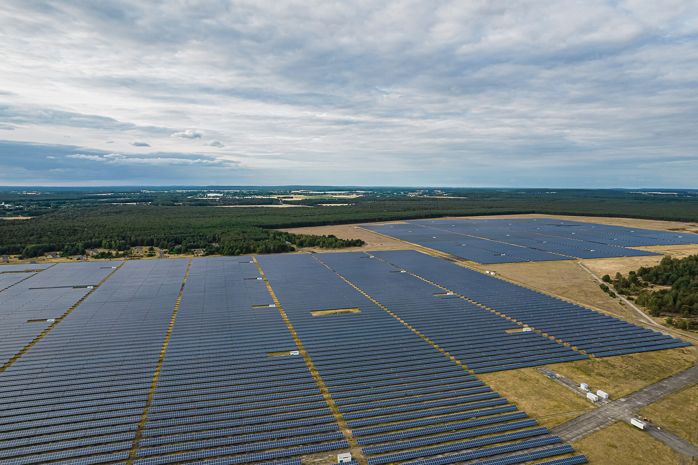

Nuno Labs stellt eine Kamera an den Park, die den Himmel beobachtet, und sagt daraus die Einspeisung der nächsten Minuten bis zwei Stunden vorher.
Demo anfragenEine einzelne Wolke nimmt einem Solarpark in Sekunden die halbe Leistung. Wettermodelle sehen sie nicht kommen. Unsere Kamera steht am Park und sieht sie Minuten vorher.
Nuno Labs · TUM Spin-off, München · gefördert durch EXIST. Fotos: Platzhalter von Wikimedia Commons (Quellen in assets/img/QUELLEN.txt).